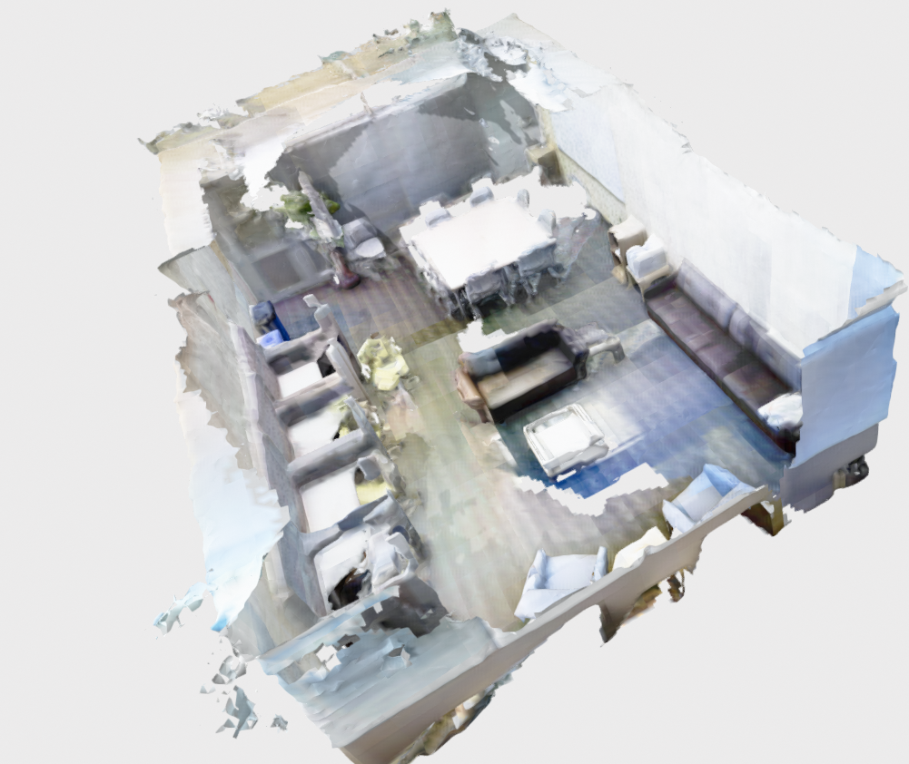
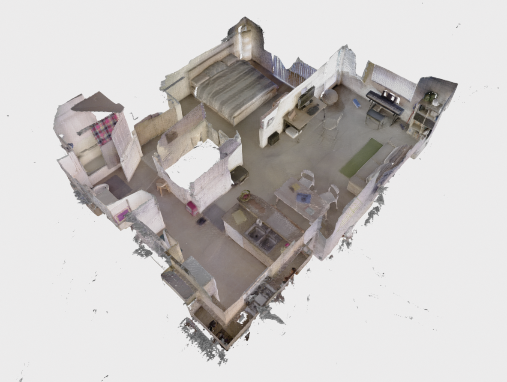

More Examples#
Note
This example assumes that nvblox has been built from source — see Install nvblox from Source (in Docker).
If you would like to run nvblox on public datasets, we include some executables for fusing 3DMatch, Replica, and Redwood datasets.
The executables are run by pointing the respective binary to a folder containing the dataset. We give details for each dataset below.
Replica#
Instructions to run Replica are given in Run an Example.
3DMatch#
In this example we fuse data from the 3DMatch dataset.
Download an example SUN3D dataset by running the following command:
wget http://3dvision.princeton.edu/projects/2016/3DMatch/downloads/rgbd-datasets/sun3d-mit_76_studyroom-76-1studyroom2.zip
unzip sun3d-mit_76_studyroom-76-1studyroom2.zip
From the nvblox base folder run
build/executables/fuse_3dmatch sun3d-mit_76_studyroom-76-1studyroom2
A visualizer window will open and you should see the mesh being incrementally reconstructed in real time. See Run an Example for more details. When reconstruction is complete, the mesh will look similar to the image below:

Redwood#
The Redwood RGB-D datasets are available here.
Download the “RGB-D sequence” and “Our camera poses” at the link above.
Extract the data into a common folder. For example for the apartment sequence
the resultant folder structure looks like (here we assume datasets are stored in ~/datasets):
~/datasets/redwood/apartment
~/datasets/redwood/apartment/pose_apartment/...
~/datasets/redwood/apartment/rgbd_apartment/...
From the nvblox base folder run:
build/executables/fuse_redwood ~/datasets/redwood/apartment --voxel_size=0.03
Note this dataset is large (~30000 images) so the reconstruction can take a couple of minutes.
A visualizer window will open and you should see the mesh being incrementally reconstructed in real time. See Run an Example for more details. When reconstruction is complete, the mesh will look similar to the image below:
{kind=link}
